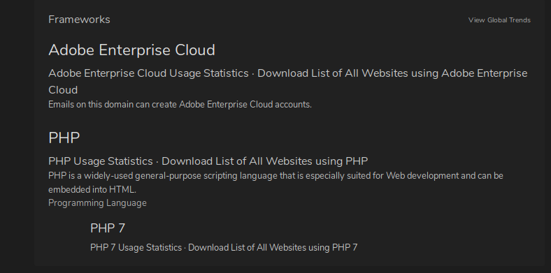

builtwith:thsis site when given a domain name tells us which web technologies this so and so site is using .We are interested in the frameworks this site is running

also see content delivery network
as u scroll it has hell lot of technologies to see na hence an alternative approach
using a tool called wappalyser for firefox:

so we if know eg its running with ohp or drupal then there might be a vulnerability within those
the technologies its using do enumeration on them and get any kind of vulnerabliities
we also have a tool in kali called whatweb

see clearly it s a redirect so it wont pull down all info for us
thus we get the version of drupal and php